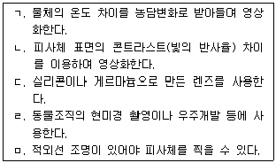
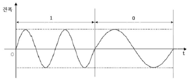
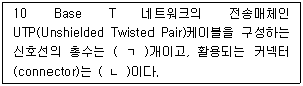

경비지도사-2차(기계경비기획및설계) (2019-11-16 기출문제)
1. UTP(Unshielded Twisted Pair) 케이블을 이용하여 데이터와 전원을 함께 보내는 기술은?
- NTSC
- POE
- PAL
- TCP/IP
(정답률: 알수없음)

2. 열화상(thermal) 카메라에 관한 설명으로 옳은 것을 모두 고른 것은?

- ㄱ, ㄴ
- ㄱ, ㄷ
- ㄴ, ㄹ
- ㄷ, ㅁ
(정답률: 알수없음)
3. 허브(Hub)의 종류가 아닌 것은?
- 더미 허브(Dummy Hub)
- 스위칭 허브(Switching Hub)
- 라우터 허브(Router Hub)
- 인텔리전트 허브(Intelligent Hub)
(정답률: 알수없음)
4. 카메라에서 조도 특성을 비교하기 위한 대상이 아닌 것은?
- 대상카메라의 F-값
- 조명의 색온도
- 피사체의 크기
- 테스트 대상물의 반사율
(정답률: 알수없음)
5. CCTV 카메라의 화각에 관한 설명으로 옳지 않은 것은?
- 화각은 초점거리가 짧을수록 넓어진다.
- 수평화각은 렌즈의 포맷너비에 반비례한다.
- 수직화각은 초점거리와 렌즈의 포맷높이에 의해 결정된다.
- 화각은 피사체를 포함한 영상을 촬영할 수 있는 범위의 각도이다.
(정답률: 알수없음)
6. UTP(Unshielded Twisted Pair) 케이블의 특징에 관한 설명으로 옳지 않은 것은?
- 외부도체가 있어 누설이 적다.
- 동축케이블에 비해 무게가 가볍다.
- 근거리 통신망(LAN)의 전송 매체로 사용된다.
- 평행형의 도선보다 전기 잡음의 영향이 적다.
(정답률: 알수없음)
7. 택시 내 CCTV 설치관련 개인정보 가이드라인에 관한 설명으로 옳지 않은 것은?
- 열람 시에는 반드시 경찰관을 입회시킨다.
- 영상 저장 시 음성도 함께 녹음되도록 한다.
- 택시 회사 내 개인정보보호 담당자를 선임한다.
- 설치목적 외 영상정보를 얻기 위하여 CCTV의 각도 등을 조절할 수 없다.
(정답률: 알수없음)
8. 정지영상 압축방식(codec)에 해당하는 것은?
- PNG
- MP3
- H.264
- MPEG-4
(정답률: 알수없음)
9. 동축케이블 대비 광케이블의 특징에 해당하지 않는 것은?
- 전송 손실이 적다.
- 대역폭이 넓다.
- 전자기적 영향을 적게 받는다.
- 전송 거리가 짧다.
(정답률: 알수없음)
10. 지능형 영상감시 시스템의 기능이 아닌 것은?
- 사람 수 카운트
- 지정된 선 통과 물체 감지
- 방치된 박스 내부의 내용물 탐지
- 지정된 영역 진입/탈출 물체 감지
(정답률: 알수없음)
11. 열선 감지기 설치 시 주의사항으로 옳지 않은 것은?
- 설치높이는 3 m 이하로 하며 점검이 용이한 높이로 한다.
- 습기가 많거나 고온이 발생하는 시설에 설치를 피한다.
- 침입경로가 감지구역과 직각이 되도록 방향을 설정해 주어야 한다.
- 송ㆍ수신기로 구분되며 광축을 조정하여 감도를 최대치로 맞춰 주어야 한다.
(정답률: 알수없음)
12. 적외선 감지기에 관한 설명으로 옳은 것은?
- 침입자의 원적외선을 감지한다.
- 초음파를 이용하여 침입을 감지한다.
- 창문 파손 시에 파열음을 감지한다.
- 월담이나 창문을 통해 침입하려는 행위를 감지한다.
(정답률: 알수없음)
13. B사는 보안 강화를 위해 방범용 감지기를 설치하려고 한다. 설치 대상별 감지기의 연결로 옳지 않은 것은?
- 벽, 천장 –진동 감지기
- 금고 외벽 - 충격 감지기
- 밀폐된 창문 - 자석 감지기
- 회의실- 열선 감지기
(정답률: 알수없음)
14. 압전효과를 이용한 감지기는?
- 자석 감지기
- 음향 감지기
- 열선 감지기
- 셔터 감지기
(정답률: 알수없음)
15. 원적외선을 선택적으로 인지하는 감지기와 동작형태의 연결로 옳은 것은?
- 열선 감지기 – 능동형
- 열선 감지기 - 수동형
- 적외선 감지기 – 능동형
- 적외선 감지기 - 수동형
(정답률: 알수없음)
16. 자동화재탐지설비에 해당하지 않는 것은?
- 수신기
- 발신기
- 추적기
- 중계기
(정답률: 알수없음)
17. 방범ㆍ방재용 감지기별 그 종류의 연결로 옳지 않은 것은?
- 방범용 감지기 - 열선 감지기
- 방재용 감지기 - 연기 감지기
- 방범용 감지기 - 자석 감지기
- 방재용 감지기 - 셔터 감지기
(정답률: 알수없음)
18. 가스누설 감지기 설치 시 주의사항으로 옳지 않은 것은?
- LPG를 감지할 경우에는 천장으로부터 30 cm 이하에 설치한다.
- 환풍기, 선풍기 주변에는 설치를 피한다.
- 습기가 많은 장소와 연기가 심한 곳은 설치하지 않는다.
- 가스 취급기기로부터 4 m 이내의 천장 또는 바닥에 설치한다.
(정답률: 알수없음)
19. 열 감지기의 감지방식에 해당하지 않는 것은?
- 차동식
- 정온식
- 보상식
- 광전식
(정답률: 알수없음)
20. 차동식 스포트형 열 감지기에 관한 설명으로 옳은 것은?
- 이온화식과 광전식으로 분류한다.
- 넓은 범위에서의 열 효과 누적에 의하여 작동한다.
- 일정온도 상승률 이상이며 일국소의 열 효과에 의하여 작동한다.
- 다른 종류 금속판의 상호간 열전효과에 의해 열기전력이 발생하는 것을 감지한다.
(정답률: 알수없음)
21. 저항 값이 60 Ω인 회로에 200 mA의 전류가 흐르고 있다. 이 회로 양단의 전압(V)은?
- 3
- 6
- 12
- 24
(정답률: 알수없음)
22. 화재 감지기 중 연기감지기를 설치하지 않아도 되는 장소는?
- 계단ㆍ경사로
- 10 m 길이의 복도
- 엘리베이터 기계실
- 천장의 높이가 18 m인 공연장
(정답률: 알수없음)
23. 금속전선관의 굵기 선정방법에 관한 설명으로 옳지 않은 것은?
- 배관공사의 경우에는 전선관을 선정 후 전선의 규격을 결정한다.
- 전선관은 전선의 삽입이나 교체를 용이하게 할 수 있는 내경이 있어야 한다.
- 굵기가 같은 전선인 경우, 전선 단면적의 총합계가 관내 면적의 48 % 이하가 되어야 한다.
- 굵기가 다른 전선인 경우, 전선 단면적의 총합계가 관내 면적의 32 % 이하가 되어야 한다.
(정답률: 알수없음)
24. 전기사업법상 일반용 전기설비 점검자의 자격으로 옳은 것은?
- 전기분야 산업기사 취득자
- 비전공자로서 현장 실무 경력 3년 이상 유경험자
- 고등학교 전기과 졸업 후 실무 1년 이상 유경험자
- 전문대학 통계학과 졸업자 또는 동등 이상의 학력자
(정답률: 알수없음)
25. 일반용 전기설비에 해당하지 않는 것은?
- 수전전압 380 V의 목욕탕
- 수전전압 440 V의 저압설비
- 수전용량 80 kW의 소형공장
- 수전용량 50 kW의 대형마트
(정답률: 알수없음)
26. 인체보호 목적으로 기기외함에 설치하는 설비는?
- 수전설비
- 정류설비
- 옥내설비
- 접지설비
(정답률: 알수없음)
27. 낙뢰설비의 접지 저항 기준은?
- 10 Ω 이하
- 10 kΩ 이하
- 10 MΩ 이하
- 10 GΩ 이하
(정답률: 알수없음)
28. 전선의 굵기 선정 시에 고려사항으로 옳은 것은?
- 간선, 분기회로별로 최소 사용전류를 산출한다.
- 부하 중심까지의 거리를 결정한다.
- 전압강하의 평균치를 간선별로 결정한다.
- 실무 경험에 따라 전선의 굵기를 계산한다.
(정답률: 알수없음)
29. 전기사업법상 전기사업자에 해당하지 않는 것은?
- 송전사업자
- 발전사업자
- 배전사업자
- 수전사업자
(정답률: 알수없음)
30. 코일에 전류가 흐르면 기자력이 발생하여 내부 철심이 변화되는 원리를 이용한 것은?
- 계전기
- 반도체
- 다이오드
- 써미스터
(정답률: 알수없음)
31. 호스트(host)의 IP 주소(address)를 서버에서 동적으로 할당하는 프로토콜은?
- ARP
- DHCP
- IGMP
- SNMP
(정답률: 알수없음)
32. 신호 대 잡음비가 30 dB 이고 신호전력이 10 mW인 경우 잡음전력(mW)은?
- 0.01
- 0.1
- 1
- 10
(정답률: 알수없음)
33. 인터넷 프로토콜에 관한 설명으로 옳지 않은 것은?
- FTP는 응용계층 프로토콜이다.
- TCP는 전송계층 프로토콜이다.
- IP는 네트워크 계층 프로토콜이다.
- UDP는 데이터링크 계층 프로토콜이다.
(정답률: 알수없음)
34. 비트(bit) 0과 1에 대한 변조파형이 다음과 같은 경우 해당되는 변조방식은?

- ASK
- PSK
- FSK
- QAM
(정답률: 알수없음)
35. 광케이블과 동축케이블을 혼합하여 구성하는 통신망은?
- HFC
- WLL
- DMB
- FTTH
(정답률: 알수없음)
36. IPv4의 IP 주소(address) 128.10.20.30에 대한 기본 서브넷 마스크(default subnet mask)는?
- 255.0.0.0
- 255.255.0.0
- 255.255.255.0
- 255.255.255.255
(정답률: 알수없음)
37. 인터넷에서 특정한 호스트(host)까지 네트워크 연결 상태를 점검하는데 활용되는 명령어는?
- BING
- PING
- QING
- WING
(정답률: 알수없음)
38. 전송률이 100 Mbps인 비트열(bit stream)의 한 비트(bit) 구간(sec)은?
- 10-6
- 10-7
- 10-8
- 10-9
(정답률: 알수없음)
39. 다음 ( )에 들어갈 내용으로 옳게 짝지어진 것은?

- ㄱ: 6, ㄴ: BNC
- ㄱ: 6, ㄴ: RJ-45
- ㄱ: 8, ㄴ: BNC
- ㄱ: 8, ㄴ: RJ-45
(정답률: 알수없음)
40. 주기(period)가 10초(sec)인 정현파 신호의 주파수(Hz)는?
- 0.1
- 1
- 10
- 100
(정답률: 알수없음)